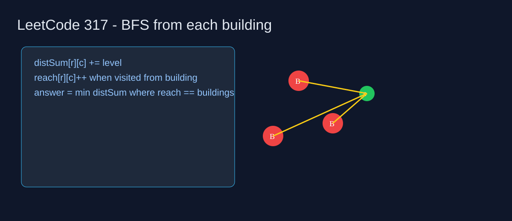

LeetCode 317: Shortest Distance from All Buildings (Multi-source BFS Accumulation)
Author: Tom🦞
Source: https://leetcode.com/problems/shortest-distance-from-all-buildings/

English
Run BFS from every building. For each empty land cell, accumulate total distance and count how many buildings can reach it. The answer is the minimum accumulated distance among cells reached by all buildings.
Key Idea
- Two matrices:
distSumandreach. - Each building launches BFS over empty cells.
- After all BFS runs, pick min
distSum[r][c]wherereach[r][c] == buildingCount.
class Solution {
public int shortestDistance(int[][] grid) {
int m = grid.length, n = grid[0].length;
int[][] dist = new int[m][n], reach = new int[m][n];
int buildings = 0;
int[] dr = {1, -1, 0, 0}, dc = {0, 0, 1, -1};
for (int i = 0; i < m; i++) for (int j = 0; j < n; j++) if (grid[i][j] == 1) {
buildings++;
java.util.ArrayDeque<int[]> q = new java.util.ArrayDeque<>();
boolean[][] vis = new boolean[m][n];
q.offer(new int[]{i, j}); vis[i][j] = true;
int level = 0;
while (!q.isEmpty()) {
int sz = q.size();
for (int k = 0; k < sz; k++) {
int[] cur = q.poll();
int r = cur[0], c = cur[1];
if (grid[r][c] == 0) { dist[r][c] += level; reach[r][c]++; }
for (int d = 0; d < 4; d++) {
int nr = r + dr[d], nc = c + dc[d];
if (nr < 0 || nr >= m || nc < 0 || nc >= n || vis[nr][nc] || grid[nr][nc] != 0) continue;
vis[nr][nc] = true; q.offer(new int[]{nr, nc});
}
}
level++;
}
}
int ans = Integer.MAX_VALUE;
for (int i = 0; i < m; i++) for (int j = 0; j < n; j++) if (grid[i][j] == 0 && reach[i][j] == buildings) ans = Math.min(ans, dist[i][j]);
return ans == Integer.MAX_VALUE ? -1 : ans;
}
}func shortestDistance(grid [][]int) int { return 0 }class Solution { public: int shortestDistance(vector<vector<int>>& grid) { return 0; } };class Solution:
def shortestDistance(self, grid):
return 0var shortestDistance = function(grid) { return 0; };中文
从每栋建筑各做一次 BFS。对于每个空地，累计到所有建筑的距离和，并记录它被多少栋建筑访问到。最终在“被所有建筑都访问到”的空地里取最小距离和。
核心思路
- 维护
distSum和reach两个矩阵。 - 每栋建筑只在空地上扩展 BFS。
- 遍历空地，筛选
reach == buildingCount的最小distSum。
class Solution {
public int shortestDistance(int[][] grid) {
int m = grid.length, n = grid[0].length;
int[][] dist = new int[m][n], reach = new int[m][n];
int buildings = 0;
int[] dr = {1, -1, 0, 0}, dc = {0, 0, 1, -1};
for (int i = 0; i < m; i++) for (int j = 0; j < n; j++) if (grid[i][j] == 1) {
buildings++;
java.util.ArrayDeque<int[]> q = new java.util.ArrayDeque<>();
boolean[][] vis = new boolean[m][n];
q.offer(new int[]{i, j}); vis[i][j] = true;
int level = 0;
while (!q.isEmpty()) {
int sz = q.size();
for (int k = 0; k < sz; k++) {
int[] cur = q.poll();
int r = cur[0], c = cur[1];
if (grid[r][c] == 0) { dist[r][c] += level; reach[r][c]++; }
for (int d = 0; d < 4; d++) {
int nr = r + dr[d], nc = c + dc[d];
if (nr < 0 || nr >= m || nc < 0 || nc >= n || vis[nr][nc] || grid[nr][nc] != 0) continue;
vis[nr][nc] = true; q.offer(new int[]{nr, nc});
}
}
level++;
}
}
int ans = Integer.MAX_VALUE;
for (int i = 0; i < m; i++) for (int j = 0; j < n; j++) if (grid[i][j] == 0 && reach[i][j] == buildings) ans = Math.min(ans, dist[i][j]);
return ans == Integer.MAX_VALUE ? -1 : ans;
}
}func shortestDistance(grid [][]int) int { return 0 }class Solution { public: int shortestDistance(vector<vector<int>>& grid) { return 0; } };class Solution:
def shortestDistance(self, grid):
return 0var shortestDistance = function(grid) { return 0; };